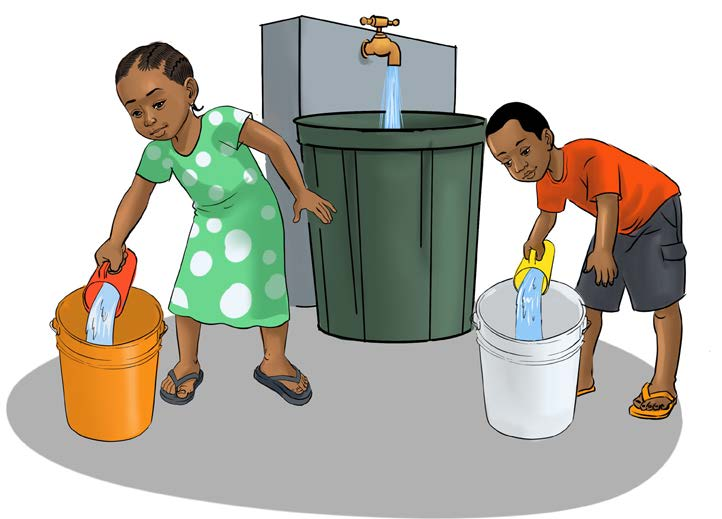

Je, ndoo hizo zitakuwa na kiwango sawa cha maji? Eleza sababu ya jibu lako.

Kazi ya kufanya 6: Kupima ujazo wa maji
1. Andaa vyombo viwili vya ujazo vilivyo sawa.
2. Jaza maji katika vyombo hivyo ukihesabu idadi ya vikombe.
3. Mwambie rafiki yako ajaze maji katika vyombo hivyo hivyo akihesabu idadi ya vikombe pia.
4. Rekodi idadi ya vikombe vilivyotumika kujaza chombo chako na cha rafiki yako.
5. Je, idadi ya vikombe vilivyojaza vyombo vinatofautiana?
Eleza sababu ya jibu lako.
6. Bainisha vitu vingine vitatu katika mazingira yako unavyoweza kupima.